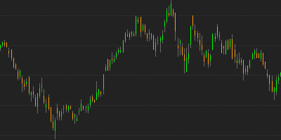
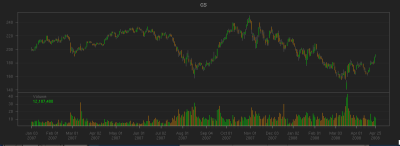

If there was one area of R that was a bit lacking, it was the ability to visualize financial data with standard financial charting tools. By virtue of no other package implementing this, quantmod took up the call and took a shot at providing a solution.
What started with a single OHLC charting solution has grown into a highly configurable and dynamic charting facility as of version 0.3-4, with more coolness slated for 0.4-0 and beyond.
For now, let's take a look at what its currently in place:
Financial Charts in quantmod:
- The workhorse: chartSeries
- Meet the friends: barChart, candleChart, and lineChart
- Chart Arguments: what can you do?
- Voodoo: Technical Analysis with TTR and addTA
Most of the charting functionality is designed to be used interactively. The following examples should be very easy to replicate from the command line or your personal GUI choice. Running from a script requires a bit of extra care, but is now possible as well.
Let's get charting!
Introducing chartSeries
chartSeries is the main function doing all the work in quantmod. Courtesy of as.xts it can handle any object that is time-series like, meaning R objects of class xts, zoo, timeSeries, its, ts, irts, and more!By default any series that is.OHLC is charted as an OHLC series. There is a type argument which allows the user to decide on the style to be rendered: traditional bar-charts, candle-charts, and matchstick-charts -- thin candles ... get it :) -- as well as line charts.
The default choice ['auto'] lets the software decide, candles where they'd be
visible clearly, matchsticks if many points are being charted, and lines if the
series isn't of an OHLC nature. If you don't like to always specify the type
to override this behavior you are free to use the wrapper functions in the
next section, or make use of setDefaults from the wickedly cool and useful
Defaults package (available on CRAN).
The fact that I wrote it has nothing to do with my
endorsement :)
> getSymbols("GS") #Goldman OHLC from yahoo
[1] "GS"
> chartSeries(GS)

> # notice the automatic matchstick style
> # we'll change this in the next section
> # but for now it is fine.
>
The basic charting functionality tries to not stray too far from the
standard usage patterns in R, though you will not be able to use
any of the standard graphics tools for displaying charts. quantmod's
oh-so-wise author has tried to anticipate that need with special
functions to make up for this shortcoming.
A quick step back, to explain just what is happening behind the scenes within chartSeries may be in order though.
The charting is managed through a two step process. First, the data is examined and basic decisions on how to best draw the series is calculated. The result of this is an internal object - referred to as a chob (chart object).
This object is then passed to the main drawing function (not to be called directly) to be drawn to the screen. The purpose of the separation is to allow for more impressive dynamic-style chart additions, as well as modifications, to be as natural to accomplish as possible. When changes are made to the current chart - be it adding technical indicators, or changing original parameters, such as the style of chart - the stored chob object is simply altered and then redrawn without a lot of tedious user manipulation. The goal was to make it work without extra user effort - and to then end it just does.
Charting shortcuts - barChart, lineChart, and candleChart.
While chartSeries is the primary function called when drawing a chart in quantmod - it is by no means the only way to get something done. There are wrapper functions for each of the main types of charts presently available in quantmod.
Wrapper functions exist to make life a little easier. Bar style charts, both hlc and ohlc varieties are directly available with barChart, candlestick charting comes naturally through the candleChart wrapper function, and lines via the cryptically named - you guessed it - lineChart. There isn't much special about these functions beyond the obvious. In fact they are one liners that simply call chartSeries with suitably changed default args. But they make a nice addition to the stable.
> # first some high-low-close style bars, monochromatic theme
> barChart(GS,theme='white.mono',bar.type='hlc')
> # how about some candles, this time with color
> candleChart(GS,multi.col=TRUE,theme='white')
>
> # and now a line, with the default color scheme
> lineChart(GS,line.type='h',TA=NULL)
As you can see, there is quite a bit of flexibility as to the display of your information. What you may have also noticed is the different arguments to each of the calls. We'll now take a look at what some of them do.
Formal Arguments: Colors, subsetting, tick-marks.
The best place for complete information on what arguments the functions take is in the documentation. But for now we'll take a look at some of the common options you might change.
Probably the most important from a usability standpoint is the argument subset. This takes an xts/ISO8601 style time-based string and restricts the plot to the date/time range specified. This doesn't restrict the data available to the techinical analysis functions, only restricts the content drawn to the screen. For this reason it is most advantageous to use as much data as you have available, and then provide the chartSeries function with the subset which you would like to view. This subsetting is also avialable via a call to zoomChart.
An example, or three, should help clarify its usage.
> # the whole series
> chartSeries(GS)
Click on the chart to see it full size: 
{kind=link}
> # now - a little but of subsetting
> # (December '07 to the last observation in '08)
> candleChart(GS,subset='2007-12::2008')
Click on the chart to see it full size:
{kind=link}
> # slightly different syntax - after the fact.
> # also changing the x-axis labeling
> candleChart(GS,theme='white', type='candles')
> reChart(major.ticks='months',subset='first 16 weeks')
Click on the chart to see it full size:
{kind=link}
Three things of note on the last chart. First was the use of reChart to modify the original chart. This takes most arguments of the original charting calls, and allows for quick modifications to your charts. Be it changing color themes or subsetting - it comes in quite handy.
The second notable item is the use of the 'first' syntax inside of subset. This allows for a slightly more natural expression of what you may be after, and doesn't require you to know anything about the series dates or times.
The final item of note in that last image is the tick.marks argument. This is part of the original chartSeries function formals list, and it is used to modify the placement of labels within the chart. Often the automatically chosen spacing - driven by the xts function axTicksByTime does a good enough job - you may find it desirable to customize the output further. In this case we marked the major ticks with the months beginnings.
Technical Analysis and chartSeries
Updated and ready to go are some fantastic tools from the TTR package by Josh Ulrich, available on CRAN. It is now possible to simply add dozens of technical analysis tools to chart with nothing more than a simple command.
The current indicators from the TTR package, as well as a few originating in the quantmod package are:
| Indicator | TTR Name | quantmod Name |
|---|---|---|
| Welles Wilder's Directional Movement Indicator | ADX | addADX |
| Average True Range | ATR | addATR |
| Bollinger Bands | BBands | addBBands |
| Bollinger Band Width | N/A | addBBands |
| Bollinger %b | N/A | addBBands |
| Commodity Channel Index | CCI | addCCI |
| Chaiken Money Flow | CMF | addCMF |
| Chande Momentum Oscillator | CMO | addCMO |
| Double Exponential Moving Average | DEMA | addDEMA |
| Detrended Price Oscillator | DPO | addDPO |
| Exponential Moving Average | EMA | addEMA |
| Price Envelope | N/A | addEnvelope |
| Exponential Volume Weigthed Moving Average | EVWMA | addEVWMA |
| Options and Futures Expiration | N/A | addExpiry |
| Moving Average Convergence Divergence | MACD | addMACD |
| Momentum | momentum | addMomentum |
| Rate of Change | ROC | addROC |
| Relative Strength Indicator | RSI | addRSI |
| Parabolic Stop and Reverse | SAR | addSAR |
| Simple Moving Average | SMA | addSMA |
| Stocastic Momentum Index | SMI | addSMI |
| Triple Smoothed Exponential Oscillator | TRIX | addTRIX |
| Volume | N/A | addVo |
| Weighted Moving Average | WMA | addWMA |
| Williams %R | WPR | addWPR |
| ZLEMA | ZLEMA | addZLEMA |
All of the above work much like the TTR base functions on which they call. The primary difference is that the add family of calls do not include the data argument, as this is derived from the current chart.
A few examples will highlight how to build charts with the built-in indicators.
> getSymbols("GS") #Goldman OHLC from yahoo[1] "GS"
> # The TA argument to chartSeries is one way to specify the
> # indicator calls to be applied to the chart.
> # NULL mean don't draw any.
>
> chartSeries(GS, TA=NULL)
{kind=link}
> # Now with some indicators applied
>
> chartSeries(GS, theme="white",
+ TA="addVo();addBBands();addCCI()")
{kind=link}
> # The same result could be accomplished a
> # bit more interactively:
> #
> chartSeries(GS, theme="white") #draw the chart
> addVo() #add volume
> addBBands() #add Bollinger Bands
> addCCI() #add Commodity Channel Index
One of the newest and most exciting additions to the recent quantmod release includes two new charting tools designed to make adding custom indicators far quicker than previously possible.
The first of these is addTA. This is a major extension to the previous addTA function, in that it now allows for arbitrary data to be drawn on the charts. Acting as essentially a wrapper to your data, the only requirement is that the data have the same number of observations as the original, or be of class xts and the dates are within the original data's time range and scale. It is possible to have this new data plotted in its own TA subchart (the default), or overlayed on the main series.
The second and potentially more interesting function is newTA. This is the long-awaited skeleton function to create custom TA indicators to be appended to any chart. It takes the skeleton concept one step further, and dynamically creates the function code needed for a new indicator, based on the function you passed to it. Essentially a bit of self-aware programming makes adding new indicators quite intuitive and practically painless. Given it's rather cutting edge abilities, it is on the cusp of experimental. Luckily if all else fails, and what you get is not what you expected, you can always modify the code created to better suit your needs.
A quick look at adding custom indicator data and creating a new indicator from scratch.
> getSymbols("YHOO") #Yahoo! OHLC from yahoo[1] "YHOO"
> # addTA allows you to add basic indicators
> # to your charts - even if they aren't part
> # of quantmod.
>
> chartSeries(YHOO, TA=NULL)
> #Then add the Open to Close price change
> #using the quantmod OpCl function
>
> addTA(OpCl(YHOO),col='blue', type='h')
{kind=link}
> # Using newTA it is possible to create your own
> # generic TA function --- let's call it addOpCl
> #
> addOpCl <- newTA(OpCl,col='green',type='h')
>
> addOpCl()
{kind=link}
More to come...
There is much more to say about chartSeries and quantmod's current and future visualization tools, but for now it is time to call it a day (or 30) and conclude this introduction to charting in quantmod.
Future additions to this site and the documentation will include more details about interacting with the charts - now and in upcoming releases, new layout options, and a possible foray into entirely new visualization tools and techniques.
But for now that is all I've got...